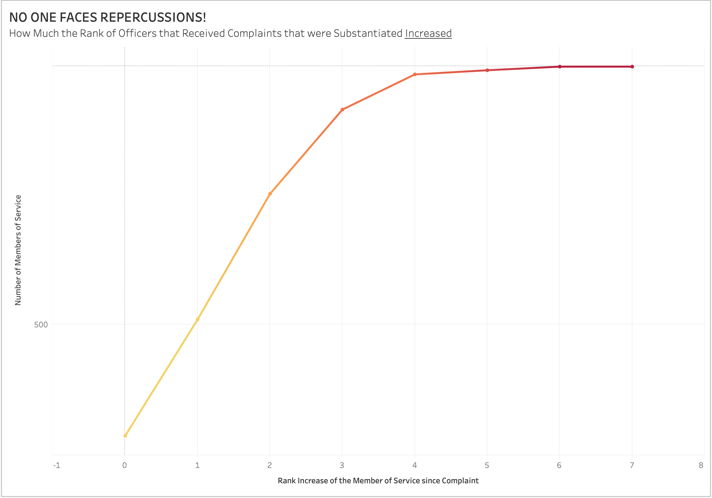

Proposition: NYPD police does not face repercussions if they break the rules
FOR the Proposition
Design Decisions and Rationale:
- Choice of Scale
Initially, I used a reverse logarithmic scale to "hide" the 0 value, but I later opted for a reversed axis with an initial tick-mark at 500. This decision exaggerated the impression that many officers had significant rank increases, making the visualization more deceptive. Showing the initial tick-mark at 500 also make it easy to conceal that the number of MOS who rank change is 7 is really low. While if looking more into the graph you would be able to tell the inconsistencies, at first glance the graph is very deceiving (as I had a lot of people react "wow, what is that?!" whenever they would see me screen from afar). - Use of Color Gradient
A gold-to-red color gradient was used to emphasize that higher numbers are worse. Originally, I considered a blue-orange scheme, which is commonly used for good vs. bad contrasts. However, since there is no positive outcome in this dataset, I opted for a single-color gradient to reinforce the severity of higher values without introducing unnecessary comparisons. - Line Chart Instead of Discrete Markers
Although the data represents discrete points, I chose to use a line chart rather than individual circles or bars to emphasize an apparent trend. This could be misleading because it suggests a continuous progression rather than distinct events. To counteract this, I included dot markers along the line, but their visibility is limited. Additionally, my choice was partly constrained by Tableau’s limitations in rendering the bar plot in a way that similarly deceived with the reverse axis. - Binning of Substantiated Complaints
I binned all substantiated complaints together, but I excluded substantiated (MOS unidentified) since that would not show up on MOSs record (though that happened only once so it did not matter as much) and substantiated (No Recommendations) (yup, that exists too) mainly because both the complaint and the discipline show up on the MOSs records, so it would not make a difference. article on NYPD discipline (that btw was incorrect in the data layout of CCRB) - Inclusion of Complaints Before 2000
Initially, I considered only showing data from 2000 onward, as complaints before that were often closed the same day they were received, leading me to believe they were likely unsubstantiated. However, upon closer inspection, I found that a non-negligible number of substantiated complaints existed before 2000, so I decided to include them. - Defining Initial Rank for Rank Change Calculation
I chose to count the initial rank from when an MOS received their first substantiated complaint rather than from their first complaint overall. This decision gives the benefit of the doubt to officers and avoids penalizing them for unsubstantiated complaints. However, this visualization does not capture the total number of complaints an MOS received, nor does it differentiate between levels of substantiated complaints (e.g., "instructions" low severity vs. "charges" high severity)., which would lead to a trial. I tested a version using only "substantiated (charges)" complaints, which produced a similar pattern but with fewer officers affected. However, given the long timeframe (1985–2020), the number of cases may not have been large enough to make the same impact. 
Finally, a catchy title was used to show that no ones rank decreased!
The overall score I would assign to my design choices is 0.5. While some decisions were deceptive—particularly the axis manipulation—others aimed to enhance interpretability without distorting the data. A well-informed viewer familiar with reversed/capped axes might recognize the potential for misrepresentation, but a general audience could easily misinterpret the visualization. No data was altered, ensuring that the conclusions drawn are still based on real trends. However, making the deceptive elements more explicit through annotations or alternative visualizations would have improved the ethical standing of the design.
AGAINST the Proposition
Design Decisions and Rationale:
- Selection of Time Frame
The data range was chosen from 2007 to 2019 instead of including earlier years. Complaints prior to 2004 were low in number, which made the percentage of substantiated complaints appear significantly higher. Selecting 2007 as the starting point created a more consistent trend, making it seem as though there was a steady increase in the substantiation rate. (Including earlier years would have provided a more complete picture but would have made the trend appear more erratic.) - Use of Color, Axis Scaling, and Prediction Interval
The color green was deliberately used to imply that an increasing substantiation rate is a positive outcome. Additionally, a 90% prediction interval was chosen instead of the more common 95%, making the range appear narrower and increasing confidence in the trend. The y-axis was capped at 10% instead of starting from 0, further exaggerating the rate of increase. - Binning of Substantiated Complaints
All substantiated complaints were grouped together, without exclusions. Unlike the first visualization, where some categories were omitted, this approach ensured that all recognized rule violations were included, making the visualization more transparent. (Breaking down substantiated complaints into different severity levels could have provided a more nuanced understanding but would have complicated the visualization.)
The percentage of substantiated complaints was computed as:
100*[total substantiated] / [total complaints per year]
where total substantiated = { FIXED [Year Received] : SUM([substantiated (0/1)]) }
where substantiated (0/1) = IF [Board Disposition (group)] = "Substantiated" THEN 1 ELSE 0 END
and total complaints = { FIXED [Year Received] : COUNT([Complaint Id])}
However, an initial miscalculation occurred due to multiple allegations per complaint, leading to overcounting. This was corrected by ensuring unique complaint IDs were counted appropriately.
The title was chosen to suggest that NYPD officers increasingly face consequences, but "substantiated" does not necessarily mean penalized. While the visualization implies accountability, in reality, a substantiated complaint does not always lead to disciplinary action.
Overall, I would score this visualization as -1 due to the selective time frame, capped y-axis, choice of prediction interval, and potentially misleading title. While the data itself was not manipulated, these design choices collectively shape a more persuasive but also deceptive narrative.
Final Reflection
Creating these visualizations revealed how subtle design choices can significantly shape interpretation. One of the most striking realizations was how easily a visualization can mislead even without altering the data itself. Decisions about axis scaling, time frame selection, and color use all played a crucial role in framing the narrative. It was particularly interesting to see how small adjustments—such as capping the y-axis or excluding earlier data—could make trends appear more dramatic or stable than they actually were. While some of these choices improved clarity and engagement, they also raised ethical concerns regarding how much emphasis was placed on specific interpretations over others. I now see ethical data visualization as a balance between clarity, persuasion, and honesty. Persuasion itself is not inherently unethical; rather, the distinction between “acceptable” and “misleading” lies in whether the visualization allows for a fair and informed interpretation. Acceptable persuasive choices enhance understanding without distorting reality, while misleading ones obscure important context or exaggerate trends. In these visualizations, the biggest ethical gray area came from omitting key contextual factors—such as the fact that substantiated complaints do not necessarily lead to penalties. This experience reinforced the importance of transparency, including acknowledging limitations and uncertainties in the data, to ensure that visual storytelling remains both compelling and truthful.
Additional notes
Both visualizations do not fully account for the fact that while a complaint may be substantiated and a disciplinary action recommended, it remains at the discretion of the NYPD whether to enforce it. This means that substantiation does not necessarily equate to actual consequences. Additionally, exonerated and unsubstantiated complaints were largely ignored in the analysis, but this does not mean the alleged conduct did not occur—these classifications are also subject to NYPD’s discretion (e.g., an officer could be exonerated to facilitate a promotion). Another consideration was handling missing demographic data. Some records had NULL values for complainant ethnicity and gender, despite available categories like "not described" or "unknown." Since the rest of the data in those records was intact and no racial or gender-based visualizations were created, I determined that these missing values did not meaningfully impact the integrity of the graphs.